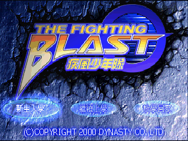
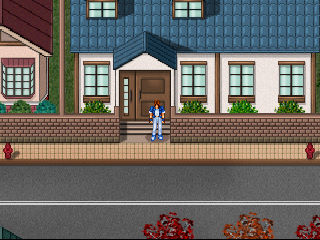
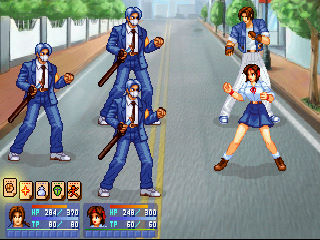

名稱：疾風少年隊 (The Fighting Blast，中文版)
簡介：漢堂2000年出品的角色扮演遊戲，由智冠代理發行，以3D斜角畫面呈現，採團隊回合
方式戰鬥 [待補]。



保護：光碟
備註：虛擬機+XP或Win64安裝時請選640x480，否則可能會無法設定顯示模式而無法執行。
檔案：update.rar = 顯示問題專用更新檔（沒有顯示問題不必更新）
修改：School.exe
1.啟用Debug模式（遊戲中按下PgDn進入Debug模式）
5F 38 40 00
78 -- -- --
47 00 75 7A 8B
-- -- 74 -- --